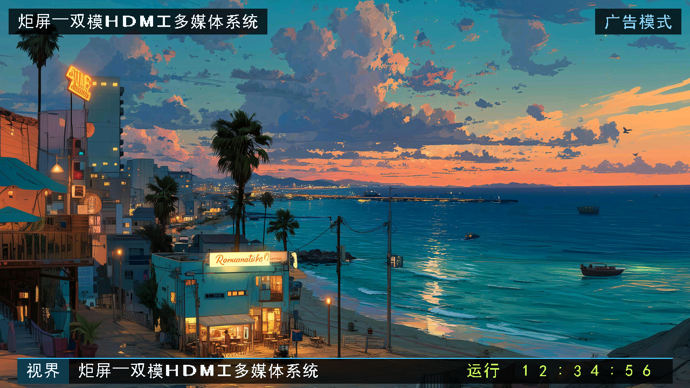
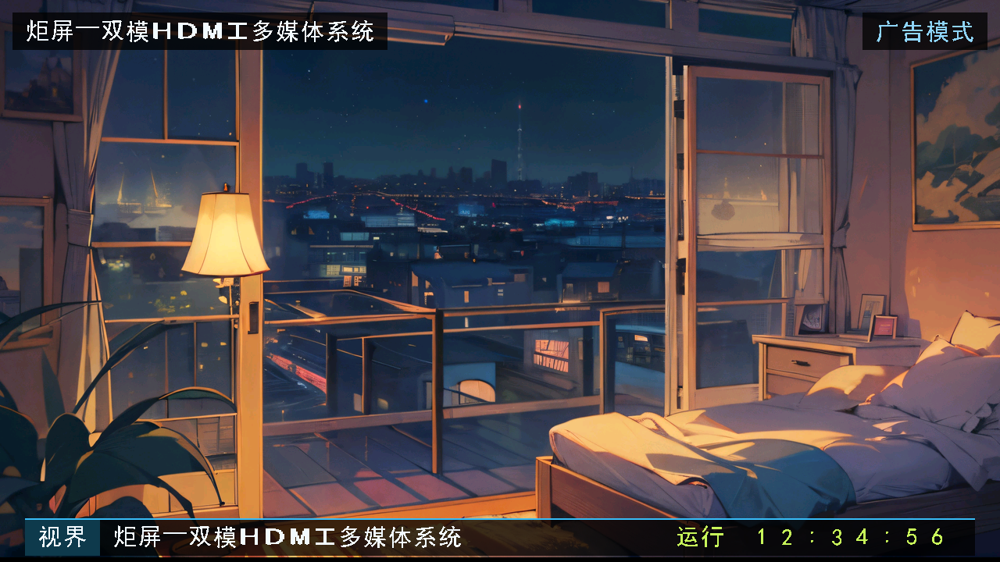
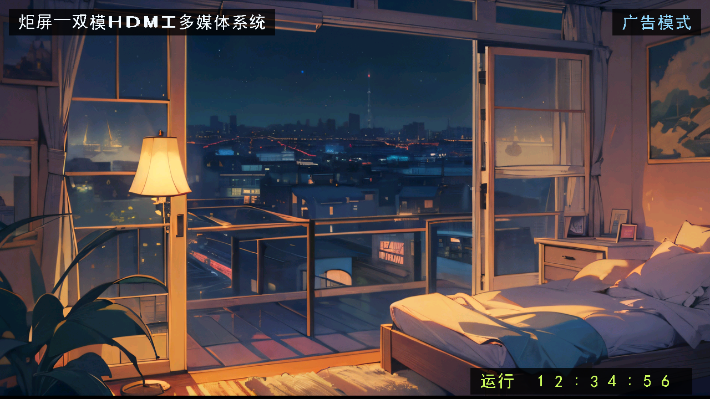
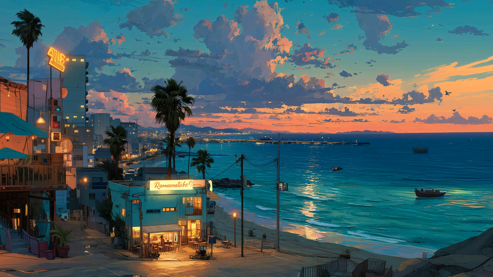
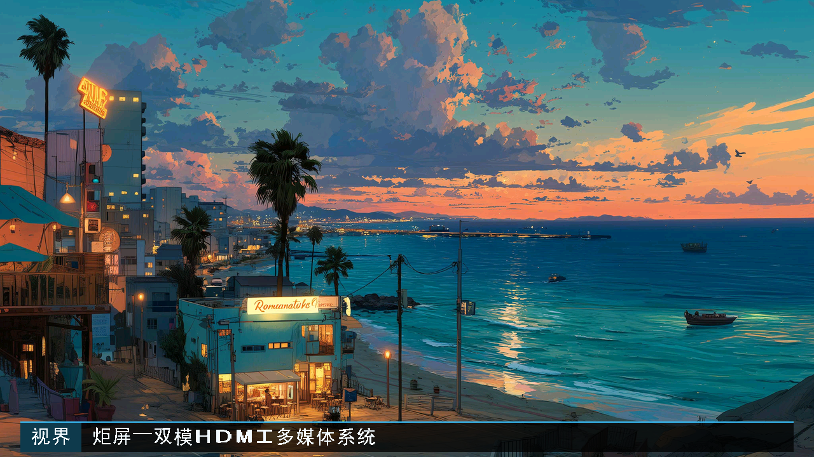
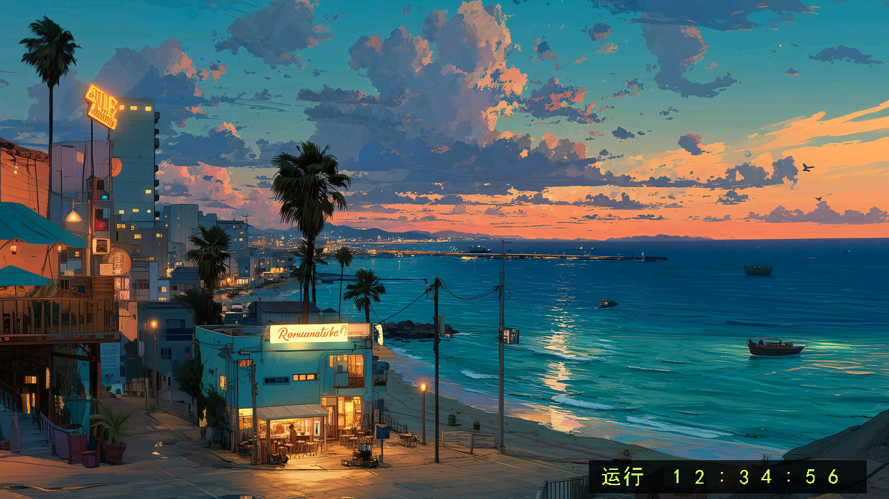
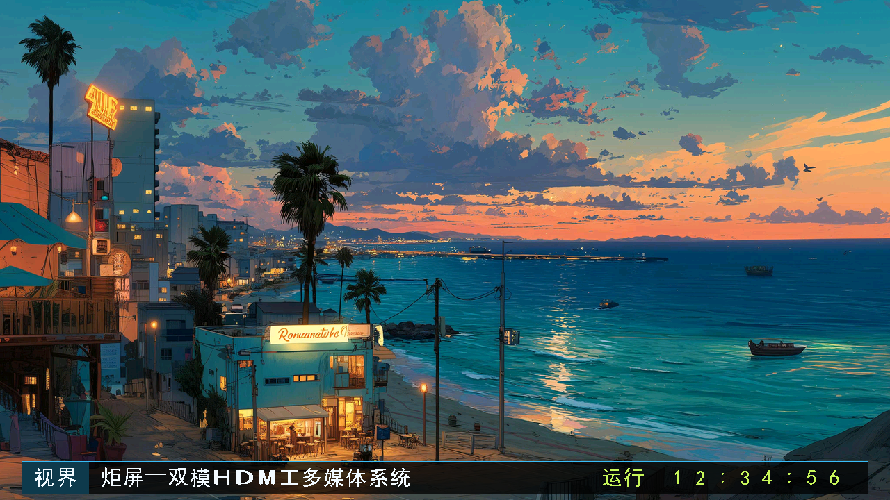
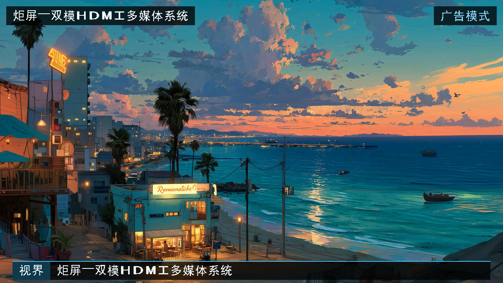
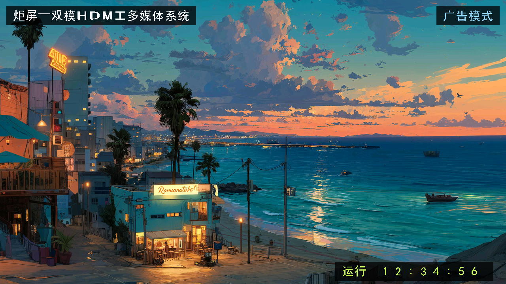

炬屏 · 当前 UI 审美审查图集
2026-10-23 · 13个菜单场景 + 11张照片OSD图（含8组合）+ 3条字幕细图 + 1张波形局部图。
首要标准是美观：请严格检查构图、留白、字体、配色和视觉状态，不以“能运行”代替审美判断。
点击图片打开原尺寸；菜单再比较640×480原生逻辑图。这里没有板拍，没有本轮动态录像。
现状报告 · 严格审美提示词 ·
返回模板 · 逐图来源
14 · hdmi_b_light_OSD_RTL
当前OSD RTL静态输出；波形关闭，非板拍。

images/hdmi_b_light_OSD_RTL.png · 1280×720
15 · hdmi_b_dark_OSD_RTL
当前OSD RTL静态输出；波形关闭，非板拍。

images/hdmi_b_dark_OSD_RTL.png · 1280×720
16 · hdmi_b_subtitle_off_OSD_RTL
当前OSD RTL静态输出；波形关闭，非板拍。

images/hdmi_b_subtitle_off_OSD_RTL.png · 1280×720
17 · hdmi_b_T0C0S0_OSD_RTL
当前OSD RTL静态输出；波形关闭，非板拍。

images/hdmi_b_T0C0S0_OSD_RTL.png · 1280×720
18 · hdmi_b_T0C0S1_OSD_RTL
当前OSD RTL静态输出；波形关闭，非板拍。

images/hdmi_b_T0C0S1_OSD_RTL.png · 1280×720
19 · hdmi_b_T0C1S0_OSD_RTL
当前OSD RTL静态输出；波形关闭，非板拍。

images/hdmi_b_T0C1S0_OSD_RTL.png · 1280×720
20 · hdmi_b_T0C1S1_OSD_RTL
当前OSD RTL静态输出；波形关闭，非板拍。

images/hdmi_b_T0C1S1_OSD_RTL.png · 1280×720
21 · hdmi_b_T1C0S0_OSD_RTL
当前OSD RTL静态输出；波形关闭，非板拍。

images/hdmi_b_T1C0S0_OSD_RTL.png · 1280×720
22 · hdmi_b_T1C0S1_OSD_RTL
当前OSD RTL静态输出；波形关闭，非板拍。

images/hdmi_b_T1C0S1_OSD_RTL.png · 1280×720
23 · hdmi_b_T1C1S0_OSD_RTL
当前OSD RTL静态输出；波形关闭，非板拍。

images/hdmi_b_T1C1S0_OSD_RTL.png · 1280×720
24 · hdmi_b_T1C1S1_OSD_RTL
当前OSD RTL静态输出；波形关闭，非板拍。

images/hdmi_b_T1C1S1_OSD_RTL.png · 1280×720
25 · subtitle_preset_1_white_RTL
当前OSD RTL，白底输入；只取y[664,712)，无时间，字幕起始相位。
images/subtitle_preset_1_white_RTL.png · 1280×48
26 · subtitle_preset_2_white_RTL
当前OSD RTL，白底输入；只取y[664,712)，无时间，字幕起始相位。
images/subtitle_preset_2_white_RTL.png · 1280×48
27 · subtitle_preset_3_white_RTL
当前OSD RTL，白底输入；只取y[664,712)，无时间，字幕起始相位。
images/subtitle_preset_3_white_RTL.png · 1280×48
28 · waveform_current_RTL
独立波形RTL，合成PCM和固定底色；不是实际音乐、照片合成或板拍。

images/waveform_current_RTL.png · 1072×104